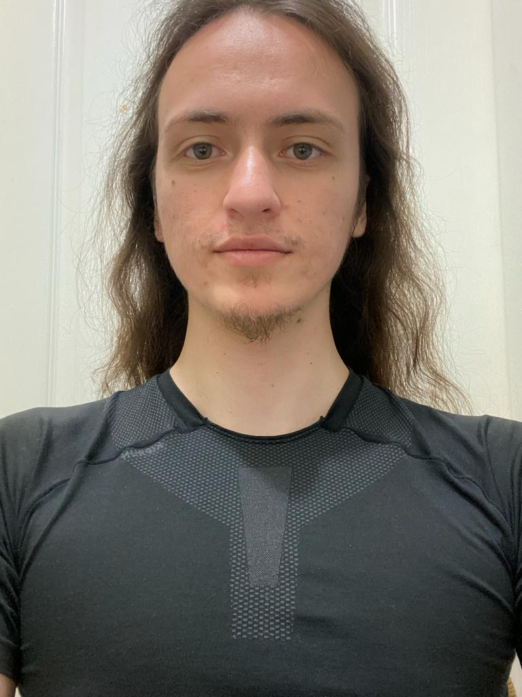

Atilla Koz

Summary
Hello, I am a game developer with a year of self-driven experience in the field. Although I have yet to work for a firm,
I have been focusing on my own projects, developing games using Unity and C#. I have also been honing my
graphic skills with Blender and Photoshop.
My primary objective is to continually improve myself in game programming
and to create innovative ideas. My passion for game development is fueled by various interests including bujinkan budo taijutsu, playing the flute, figure skating,
and inline skating. I love nature, and activities such as canyoning, camping, and trekking offer me new perspectives and creative ideas.
Even though I don’t have professional experience yet,
I eagerly look forward to contributing to the gaming industry with my creativity and perpetual learning attitude.
If you're interested in learning more about what I've done in my own game projects, please feel free to reach out. I am excited about the
possibility of collaborating with you to create engaging games and enhance the user experience.
Education
- Istanbul Kultur University-Bachelor of Arts: International Trade And Finance
- Anadolu University, Eskisehir-Web Design And Coding
Work Experience
-
Sales Representative-Osmanlı Takı, İstanbul
Sep 2016 - Jun 2021
- Developed and delivered engaging sales presentations to convey productbenefits.
- Developed and delivered engaging sales presentations to convey product
- -Minimized process lags through strategic sourcing and customer expectation management.
- Paralegal-Koz Hukuk, İstanbul
Oct 2016 - May 2022
- Assisted counsel in preparing answers, providing documentation andinformation for discovery request.
- Prepared legal briefs, motions and pleadings
- Collected, drafted and maintained resources to provide comprehensive materials accessible to all firm lawyers.
- Aided legal crews by researching records and documents for case details.
- Mitigated legal team's workload by reviewing and evaluating legaldocuments, discovery materials and contracts.
Skills
- Gaming design ⭐️⭐️⭐️⭐️⭐️
- C# ⭐️⭐️⭐️⭐️⭐️
- 3D design⭐️⭐️⭐️
- Unreal Engine⭐️⭐️⭐️
- Unity ⭐️⭐️⭐️⭐️⭐️
- Game development ⭐️⭐️⭐️⭐️⭐️
- Photoshop ⭐️⭐️⭐️
- HTML ⭐️⭐️⭐️
Awards and Certifications
- 2021 UNITY C# | Unity Sıfırdan Profesyonel Seviyeye Gelin!
Others